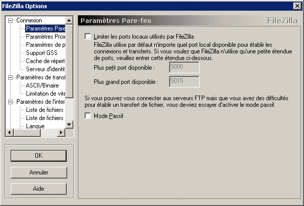

Configuration du Pare-feu
Vue d'ensemble:
En utilisant les options de cette section, vous pouvez configurer FileZilla pour qu'il soit compatible avec votre pare-feu.

| Limiter les ports locaux utilisés par FileZilla | - | Activez cette option si votre Pare-feu ne permet aux applications que d'utiliser une plage spécifique de port. Si tous les ports appartenant à cette plage spécifiée sont déjà utilisés ou si votre pare-feu empêche les applications d'utiliser ces ports, vous ne pourrez pas vous connecter aux serveurs ftp derrière votre pare-feu. |
| Mode Passif | - | Mode passif activé. Sans le mode passif, le serveur FTP établit une connexion avec votre ordinateur pour les transferts. Avec le mode passif activé, FileZilla établit une connexion avec le serveur pour les transferts. Le mode passif devrait être activé quand un type de pare-feu est sélectionné ou si vous ne pouvez accepter les connexions entrantes. |
Contactez votre administrateur système si vous ne connaissez pas l'information requise ou si vous avez un problème de connexion en rapport avec votre pare-feu.